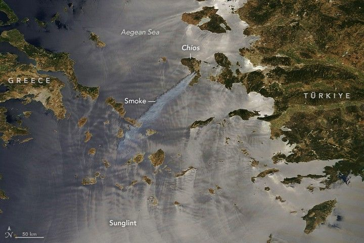

Smoke Streams Over the Aegean Sea
Several wildland fires erupted on the Greek island of Chíos starting on June 22, according to the Hellenic Fire Service, amid “very high” fire risk conditions. The fires, fanned by strong winds, quickly grew and led to the evacuation of more than a dozen communities.
According to the Copernicus Emergency Management Service (CEMS), the fires had burned about 2,200 hectares (5,400 acres) by June 23. On that morning, the MODIS (Moderate Resolution Imaging Spectroradiometer) on NASA’s Terra satellite acquired this image. Strong winds carried smoke southwest across the Aegean Sea.
Another indication of the area’s wind patterns is visible on the surface of the sea. Islands can block, slow, and redirect airflow, causing water surfaces on the leeward side to become choppy in places (dark) and calm in others (bright). The bright areas are where smooth, mirror-like water surfaces reflected sunlight directly back to the satellite sensor—an optical phenomenon known as sunglint.
By June 26, the smoke had cleared, and CEMS reported that the fires were under control. Maps indicated that between June 22 and June 25, the fires burned around 4,800 hectares (12,000 acres) across the island, affecting mostly shrubland and cropland.
The state of emergency declared on June 23 extends for a month, as authorities continue to manage the situation and assess damage. Of the hundreds of firefighters initially dispatched to combat the blazes, many remained on the island to prevent reignition.